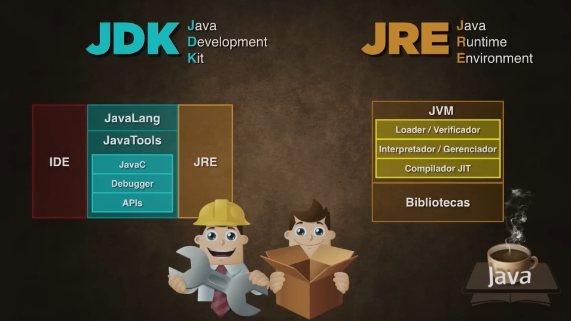

Todo programa em Java é composto de pacotes, definidos com package, mas o que realmente importa é que toda classe Java tem que ter o cabeçalho da classe, definido com public class (classe pública). Dentro do bloco da classe criamos o método (função) principal (public static void main). Veja a estrutura básica de um programa em Java:
package primeiroprograma;
public class PrimeiroPrograma {
public static void main(String[] args) {
}
}
No caso acima, o public static void main nada mais é do que um método (função) público, estático, vazio e principal. O public static indica que o método deverá ser toalmente acessível e estático. O void indica que o método não dará retorno nenhum. O main é o nome do método e indica que é principal. O String[] args é um vetor que o método main recebe como argumento.
Por padrão, o Java já vem com a biblioteca padrão java.lang, que é responsável por funcionalidades básicas como a saída de dados, e não necessita ser importada, mas outras coisas precisaremos importar para utilizarmos no Java.
O processo de compilação do Java é um pouco diferente de outras linguagens como o C e o C++. Um código-fonte em Java é compilado pelo JDK num arquivo chamado bytecode
, que não é um executável e só é lido pela máquina virtual (no caso do Java, é a Java Virtual Machine, ou JVM), que executará o código. O JRE é usado pra executar bytecodes Java, e o JDK é pra desenvolver os programas em Java. Veja abaixo os componentes de ambos:

O Java não é usado só em computador, o System.out pode ser qualquer saída. O Java é utilizado também em celulares (principalmente os mais antigos), placares, letreiros, decodificadores de sinais, velocímetros eletrônicos ou relógios compatíveis, além de poder rodar em qualquer sistema operacional. Teoricamente, qualquer sistema que tenha uma Java Virtual Machine rodaria os programas Java (pacotes com extensão .jar
contendo classes compiladas .class
), o que possibilita criarmos um programa Java em Windows e ele poder rodar num Linux ou num Mac, por exemplo. O próprio Android tem seus aplicativos feitos em Java (só que nesse caso ele gera um pacote de extensão apk com classes compiladas dex, e é interpretado na máquina virtual do Android Dalvik) e possuí outras bibliotecas.
Cuidado com os usos de minúsculas e maiúsculas no Java, pois determinadas coisas já são diferenciadas por isso, por exemplo:
meupacote.MinhaClasse, MinhaInterface.meuMetodo(), meuAtributo, minhaVariavel.MINHA_CONSTANTE.O comando pra escrever na tela (nesse caso, no prompt ou num programa), usamos o comando System.out.print().
Para criar um programa Java simples, abrimos um novo projeto e criamos a classe principal normalmente. O comando básico é o primeiro acima, mas as IDEs costumam o escrever automaticamente.
Veja o comando para executar uma frase no Prompt com o comando System.out.print:
package primeiroprograma;
public class PrimeiroPrograma {
public static void main(String[] args) {
System.out.print("Olá, Mundo!");
}
}
Depois é só executar para testar. Se funcionar, pode ser construído e executado em qualquer sistema que tenha o JRE instalado.
PS: você pode escrever sout e teclar o tab que aparecerá System.out.println. Se fizer o mesmo com psvm Aparecerá a estrutura básica do método principal. O System.out.println pula uma linha, mas tirando isso, é a mesma coisa que System.out.print. Lembrando também que este e vários outros comandos devem ser finalizados com ponto-e-vírgula (;), pois é um padrão que existe desde a linguagem C.
Os comentários de uma linha se colocam ao lado de //, e de várias linhas entre /* */, por exemplo:
// Comentário de uma linha
/*
Comentário
de
várias
linhas
*/
Para importar datas, podemos usar o código assim (não esqueça dos imports java.util.Date e java.text.SimpleDateFormat, mas a própria IDE vai sugerir as importações):
package horadosistema;
import java.util.Date;
import java.text.SimpleDateFormat;
public class HoraDoSistema {
public static void main(String[] args) {
Date atual = new Date();
SimpleDateFormat formataData = new SimpleDateFormat("dd/MM/yyyy"); // Formata data, se colocar 3 M ele exibe o nome abreviado, e 4 ou mais exibe o nome completo.
SimpleDateFormat formataHora = new SimpleDateFormat("HH:mm:ss"); // Formata hora, se quiser formato 12 horas, coloque os dois hh minúsculos, uma letra a exibe o AM/PM.
SimpleDateFormat formataSemana = new SimpleDateFormat("EEEE"); // Exibe o dia da semana por extenso, com 3 E ou menos exibe abreviado.
System.out.print("A data do sistema é: ");
System.out.println(formataData.format(atual));
System.out.println(formataSemana.format(atual));
System.out.print("A hora do sistema é: ");
System.out.println(formataHora.format(atual));
}
}
PS: O new identifica a criação de um objeto. No caso acima, a atribuição à variável atual com a classe invólucro Date recebe um novo objeto da classe Date do pacote java.util.
Caso for usar uma palavra dentro do SimpleDateFormat, coloque aspas simples pra ele não confundir com os caracteres de formatação, assim:
SimpleDateFormat formataData = new SimpleDateFormat("EEEE',' dd 'de' MMMM 'de' yyyy");
Use o exemplo acima para mostrar o idioma do sistema e a resolução da tela.
Para exibir o idioma (não esqueça da importação para java.util.Locale):
package idiomadosistema;
import java.util.Locale;
public class IdiomaDoSistema {
public static void main(String[] args) {
Locale loc = Locale.getDefault();
System.out.println(loc.getDisplayLanguage().substring(0, 1).toUpperCase() + loc.getDisplayLanguage().substring(1)); // Exibe inteiro, esse é um macete pra deixar só a primeira letra maiúscula.
System.out.println(loc.getLanguage().toUpperCase()); // Exibe abreviado.
// O método deixa só a primeira maiúscula
// O método toUpperCase() deixa todas maiúsculas.
}
}
Para exibir a resolução da tela:
package resolucaodatela;
import java.awt.Dimension;
import java.awt.Toolkit;
public class ResolucaoDaTela {
public static void main(String[] args) {
Toolkit tk = Toolkit.getDefaultToolkit();
Dimension d = tk.getScreenSize();
System.out.println(d.width + " x " + d.height);
}
}
Após construir o programa, ele só poderá ser executado na linha de comando, ao clicar nele, é provável que ele execute e feche. Para executar, você deve ir na linha de comando, procurar o caminho do arquivo (com o comando cd) e executar o executável com o comando java -jar, dessa forma:
java -jar OlaMundo.jar
Lembrando que essa não é a única forma de criar programas Java.
PS: Você pode criar arquivos de classe java numa pasta (pacote) e compilar sem IDE. Para isso, crie uma pasta, que será o pacote, e um arquivo java que será a classe (como Teste.java). Vá até ao diretório da pasta e digite o comando javac teste/Teste.java (substituindo pelo nome do pacote e da classe, caso tenha mais de um arquivo no mesmo pacote, execute apenas o que tiver o método main), ele compilará para um arquivo CLASS que pode ser executado diretamente via terminal, usando algo tipo java teste/Teste, e para isso devemos configurar o path corretamente. Para gerar o Jar dessa classe, digite jar cfe Teste.jar teste/Teste teste/Teste.class. Para ver a versão do Java instalada, digite java -version.
O Java funciona por pacotes, é meio que como um carro popular (que só vem o básico, e outros itens você vai adicionando). Todo carro básico tem por exemplo, volante, mas não vem por exemplo, com ar-condicionado, que tem que ser adicionado. Vendo o Java como um carro popular, os pacotes que já existem não precisam importar (como para fazer contas), mas os que não possuí pode ser importado (apenas o pacote java.lang é carregado automaticamente por padrão), na verdade, a maioria deve ser importada.
Com o pacote Swing, você pode criar interfaces gráficas. Ele é um sucessor do AWT (que ainda é usado), mas este se comporta de maneira diferente em outros sistemas que não sejam o Windows.
As interfaces gráficas também são feitas baseadas em orientação a objetos, pois elas são criadas facilmente graças ao conceito de herança.
Para criar um programa Java com Swing, cria-se o projeto da mesma forma anterior, mas sem criar a classe principal (essa será definida ao testar a execução do programa pela primeira vez). Nos pacotes de códigos-fontes, clique no Pacote Default com o botão direito, em Novo e em Outros, escolha Forms Gui Swing e Form JFrame. Defina o nome da Classe (primeira maiúscula com pascalcase) e do Pacote (todas em minusculas). A janela será aberta para configurar o layout dela e o código-fonte.
Após definir os nomes das variáveis, você poderá mexer no código-fonte.
PS: Se quiser evitar que o aplicativo tenha a janela redimensionada, clique no iframe e desmarque a opção "resizable" (que pode também ser feita com o this.setResizable(false), abaixo de initComponents(), no construtor). Se quiser colocar título na janela do programa Java Swing, coloque this.setTitle("Título Desejado") abaixo do InitComponents() dentro do construtor, no código (também é possível pelas propriedades do frame). Da mesma forma, pra centralizar, coloque setLocationRelativeTo(null) no mesmo local (ou nas propriedades vá em código e marque a opção de centralizar). E no mesmo local, para mudar a cor de fundo do frame, colocamos getContentPane().setBackground(Color.BLUE) (substituindo pela cor desejada), mas é recomendado usar um painel pra isso.
No exemplo abaixo, você clicará com o botão direito sobre o botão do frame para definir o evento (vá em Eventos, Action e ActionPerformed, onde está o nome da variável).
Ele criará um código grande para definir o layout da janela, mas essa será a parte do código que você precisará digitar pra exibir uma mensagem no programa:
private void cliqueBotaoActionPerformed(java.awt.event.ActionEvent evt) {
labelMensagem.setText("Olá, Mundo");
}
O JavaFX é uma evolução do Swing, não é tão usada, mas futuramente será mais usada, ele ainda não é compatível com todos os dispositivos. O JavaFX cria interfaces mais complexas que o Swing.
Abra um novo projeto JavaFX e escolha Aplicação FXML do JavaFX (pode escolher a classe normalmente). Essa aplicação permite unir Java com HTML, CSS e XML. Ele criará vários arquivos, inclusive um FXML, clique duas vezes nele para abrir o Java Scene Builder para poder criar as janelas. Se ele não criar, crie o AnchorPane, que criará o painel (frame) para o sistema (que pode ser navegador, celular e etc.), da mesma forma, labels e botões são escolhidos.
PS: Não Esqueça de ir no Code alterar os nomes das IDs. Só depois disso você salva. Você pode editar diretamente o XML se for o caso.
No Document Controller, você criará algo assim, abaixo do primeiro @FXML:
@FXML
private Label labelMensagem;
@FXML
private Button botaoClicar;
PS: No código acima, terá que adicionar a importação do botão para JavaFX, será algo assim:
import javafx.scene.control.Button;
import javafx.scene.control.Label;
No Scene Builder, em Code, coloque em OnAction o nome do evento do botão (no exemplo, será "clicouBotao").
Na IDE, ainda em Document Controller, coloque abaixo do segundo @FXML isso:
@FXML
private void clicouBotao(ActionEvent event) {
labelMensagem.setText("Olá, Mundo!");
}
PS: Tanto no Swing quanto no FX podemos também mudar a cor do nosso label, usando constantes, por exemplo:
labelMensagem.setForeground(Color.RED); // Importe java.awt.Color
Execute, se funcionar, pode compilar ele.
Lembrando que caso o programa não abra ao executar, vá no documento FXML e na tag Anchor Pane, coloque fx:controller="nomedopacotedoprojeto.FXMLDocumentController". Ou dentro o Scene, vá em Controller e Controller Class.
PS: Caso não queira que o aplicativo seja maximixado, coloque isso na classe principal Java (com o nome do aplicativo), no método start. No mesmo local, podemos colocar um título:
stage.setScene(scene);
stage.setResizable(false);
stage.setTitle("Olá Mundo!");
stage.show();
Vamos num exemplo, fazer um programa em Swing onde ele pega o horário do sistema, e inseriremos imagens no programa. Crie o projeto Swing e o frame normalmente. Depois, nos Pacotes de Códigos-fonte, crie um novo pacote para as imagens.
Para colocar imagem, crie um label e em Icon, procure a imagem no seu computador, importe ela para o pacote de imagens, logo ela será carregada no frame. Não esqueça de clicar em "Importar Arquivo para o Projeto" e verificar se ela está no pacote criado pra imagens!
Veja abaixo o código para o botão funcionar (não esqueça das importações):
private void botaoClicarActionPerformed(java.awt.event.ActionEvent evt) {
Date atual = new Date();
SimpleDateFormat formataData = new SimpleDateFormat("dd/MM/yyyy");
SimpleDateFormat formataHora = new SimpleDateFormat("HH:mm:ss");
labelData.setText(formataData.format(atual));
labelHora.setText(formataHora.format(atual));
}
Lembrando que para pegar o arquivo JAR pronto, após compilar, basta ir na pasta de projetos da IDE, e procurar ele na pasta dist (geralmente), e ele poderá ser executado em qualquer sistema com JRE instalado, e clicando diretamente nele.
Faça os exercícios de pegar Idioma do Sistema e Resolução de Tela igual no anterior, mas em Java Swing. E colocando imagens também.
PS: Mesmo que o java.lang seja carregado por padrão, podemos fazer uma importação direta de algum objeto ou classe. Veja um exemplo de importação direta do objeto out:
import static java.lang.System.out; // Nesse caso tem que colocar o static no caso de métodos ou atributos estáticos, na maioria dos casos não se coloca o static
public class Teste {
public static void main(String[] args) {
out.println("Olá, Mundo!");
}
}